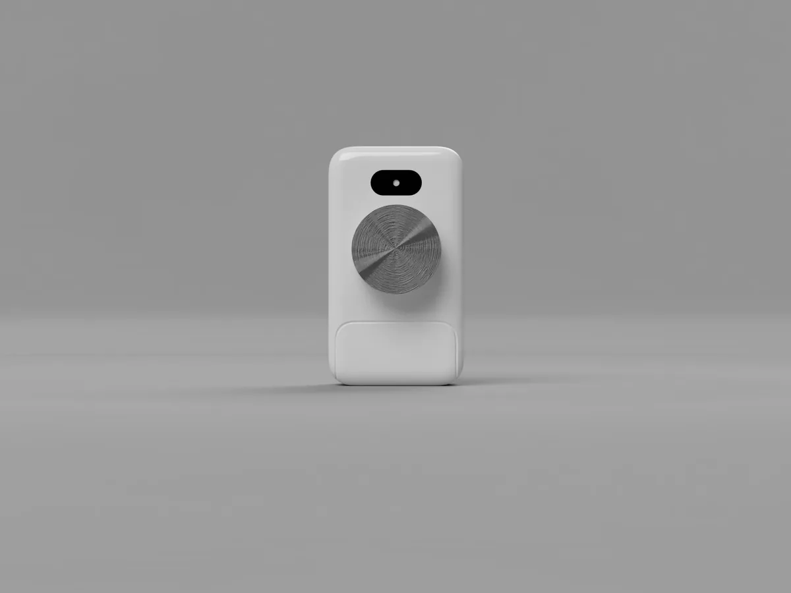

Why TeleSync Matters
Billions of people cannot reliably reach a clinician who can examine them. Telemedicine connects them to a doctor, but not to a stethoscope, a thermometer or a blood pressure reading. TeleSync provides an accessible way to collect that objective information wherever the patient is, so that remote care can be based on findings rather than descriptions alone.
The Access Gap
More than half of the global population cannot consistently obtain prevention, diagnosis, treatment, rehabilitation or follow-up care.
The shortage is expected to affect low-resource regions most severely, reducing access to physical examinations, monitoring and specialist care.
Rural communities hold a large share of the population, yet physicians and specialist services remain concentrated in major urban centres.
Sources: World Health Organization (2019, 2025); Pagaiya et al. (2015). See references.
Telemedicine Gaps
Communication without examination
Standard video consultations cannot directly capture heart sounds, lung sounds, blood pressure, oxygen saturation or other physical findings.
Measurements may be incomplete or inaccurate
Incorrect sensor placement, manual data entry, limited health literacy and disconnected devices can reduce the reliability of remotely collected information.
Deterioration may be recognised too late
Falling SpO₂, abnormal breathing, fever or new heart and lung sounds may be missed when clinicians depend only on verbal descriptions and unstable video calls.
We aim to help
Rural communities
People living far from hospitals, served by community hospitals, rural clinics and mobile medical teams.
Older adults and homebound patients
Those for whom every hospital visit means difficult travel and reliance on family or caregivers.
Recently discharged patients
People who need short-term follow-up and monitoring at home after leaving hospital.
Chronic cardiopulmonary patients
People whose heart and lung conditions benefit from regular, objective checks between appointments.
Why TeleSync?
TeleSync adds the examination back into the consultation.
Video call + verbal symptoms + patient-reported information
The clinician listens, watches and asks questions, but has little objective data to work from.
Guided vital signs + digital auscultation + structured clinical data
The clinician reviews measurements and recordings captured through a guided, repeatable workflow.
What better remote care looks like
- More objective information during remote consultations
- Faster preliminary assessment and escalation
- Better follow-up for homebound and post-discharge patients
- Improved access to clinical support in rural areas
- Reduced unnecessary travel to hospitals
- Stronger continuity between patients, caregivers and healthcare professionals

Supporting Communities
When a clinic visit means hours of travel, small problems are left until they become emergencies, and the burden falls on patients, families and already stretched local health workers. By using a portable device and ordinary smartphones, and by continuing to work offline where connectivity is poor, TeleSync is designed to bring examination to people rather than people to examination. Hospitals can lend it to patients, and provincial authorities can deploy it in rural clinics, so that no one needs to buy a device outright.
See our deployment models